Gojo Satoru |
Suguru Geto |
Yuta Okkotsu |
Yuki Tsukumo |
|---|---|---|---|
| 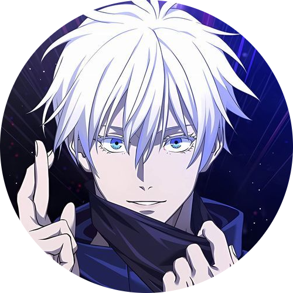 |
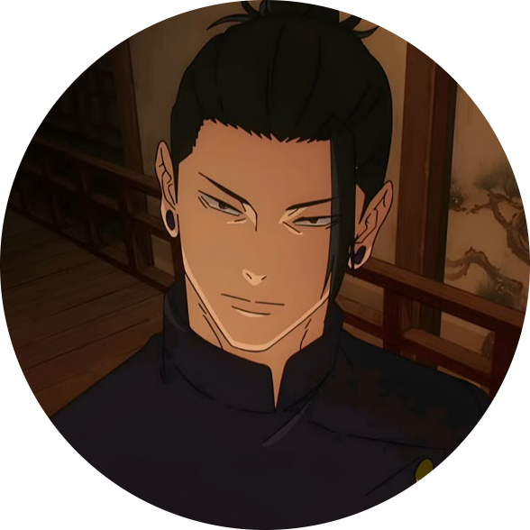 |
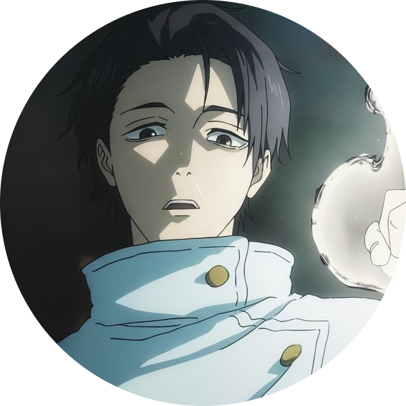 |
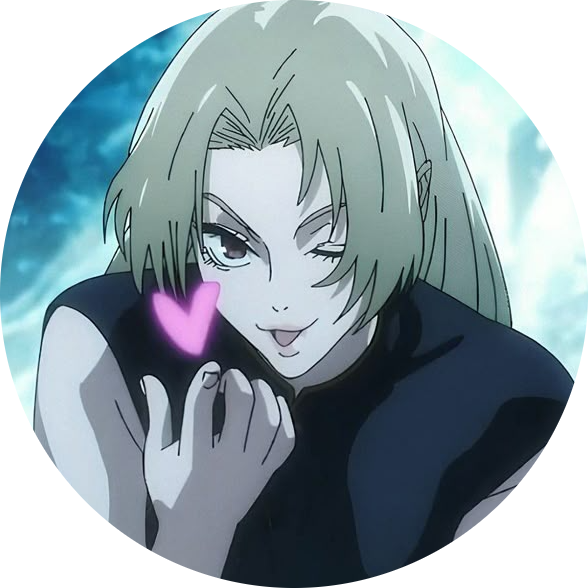 |
Special Grade is a rank reserved for anomalies within the jujutsu community, sorcerers with such immense strength that their destructive potential is immeasurable, making them very exclusive and unique cases, hence the title "special". As a testament to its rarity, as of 2018, there are only four registered sorcerers with the Special Grade rank. Sukuna, a powerful curse user from the Heian Era, is recognized as the King of Curses, with his fingers and himself being collectively categorized as Special Grade.
Nanami Kento |
Aoi Todo |
Mei Mei |
Atsuya Kusakabe |
|---|---|---|---|
| 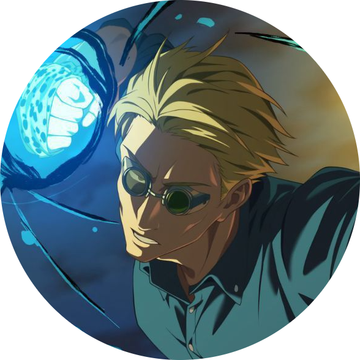 |
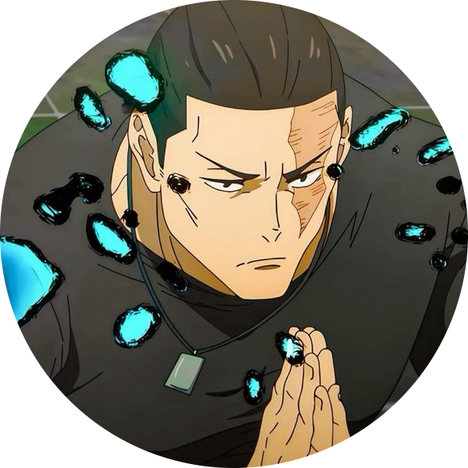 |
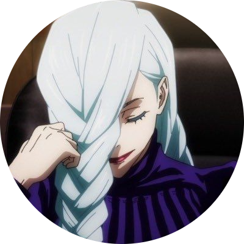 |
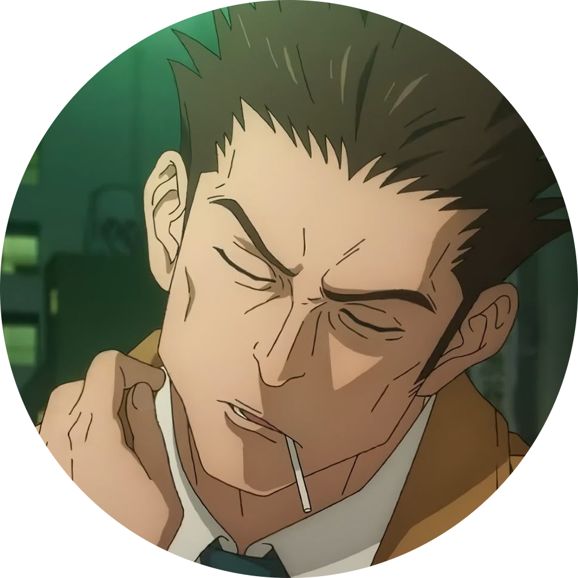 |
Grade 1 sorcerers are the ones who uphold the standards of what a sorcerer should strive to be and are the ones fit to lead society. It is the highest status a sorcerer can hope to achieve through the natural progression of ranks, as Special Grade is something of a misrepresentation. The level of danger on missions, the amount of confidentiality entrusted to them, and the compensation are far greater than Semi-Grade 1 and below.
Megumi Fushiguro |
Takuma Ino |
Momo Nishimiya |
Panda |
|---|---|---|---|
| 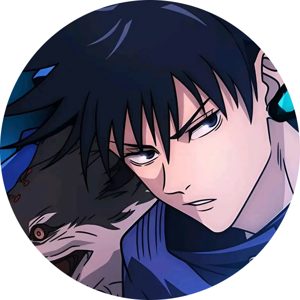 |
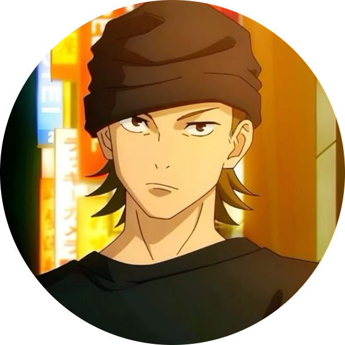 |
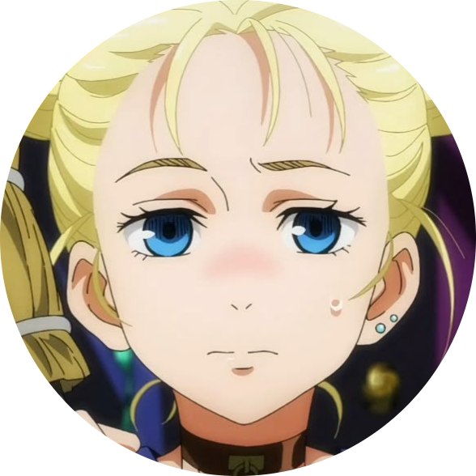 |
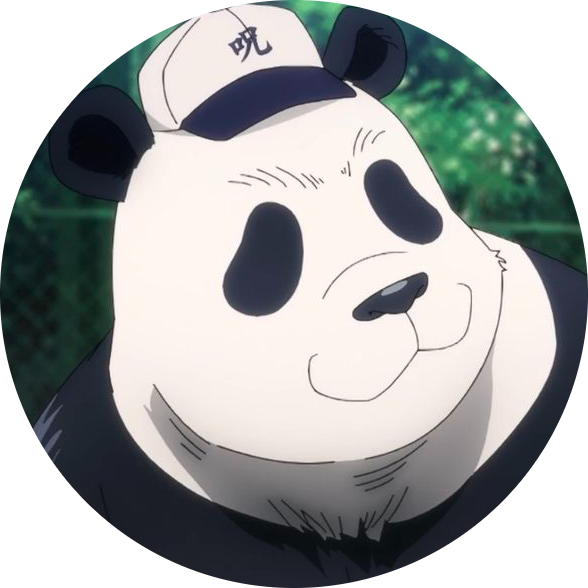 |
Grade 2 is an above-average level for a sorcerer. Most great sorcerers are between Grades 1 and 2, so they are not by any means weak. It is exceptional for a student to be Grade 2, a status which allows them to take on solo assignments. A student receiving a Grade 2 rank upon enrolling is considered to be a genius.
Nobara Kugisaki |
Mai Zenin |
Kasumi Miwa |
Arata Nitta |
|---|---|---|---|
| 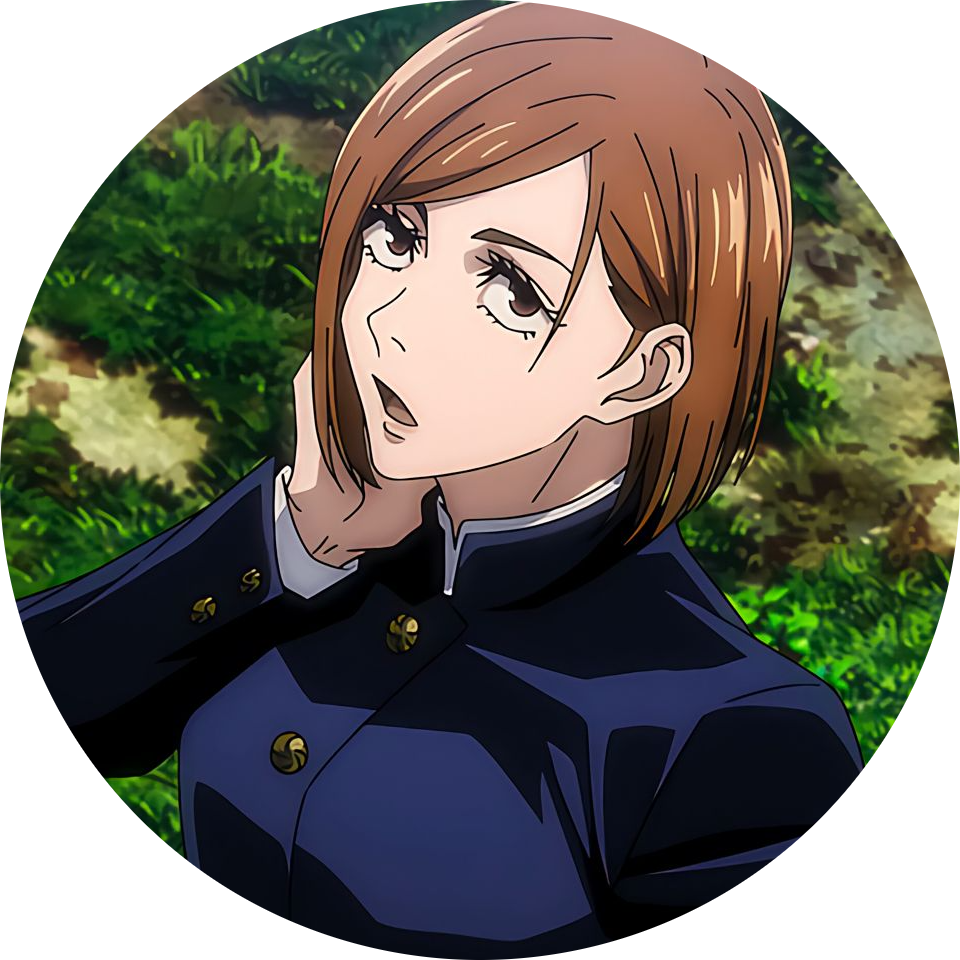 |
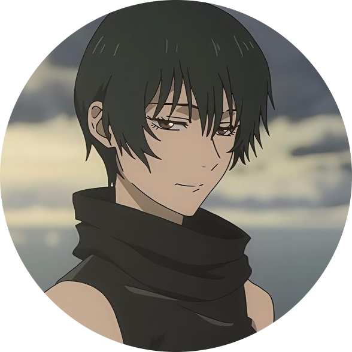 |
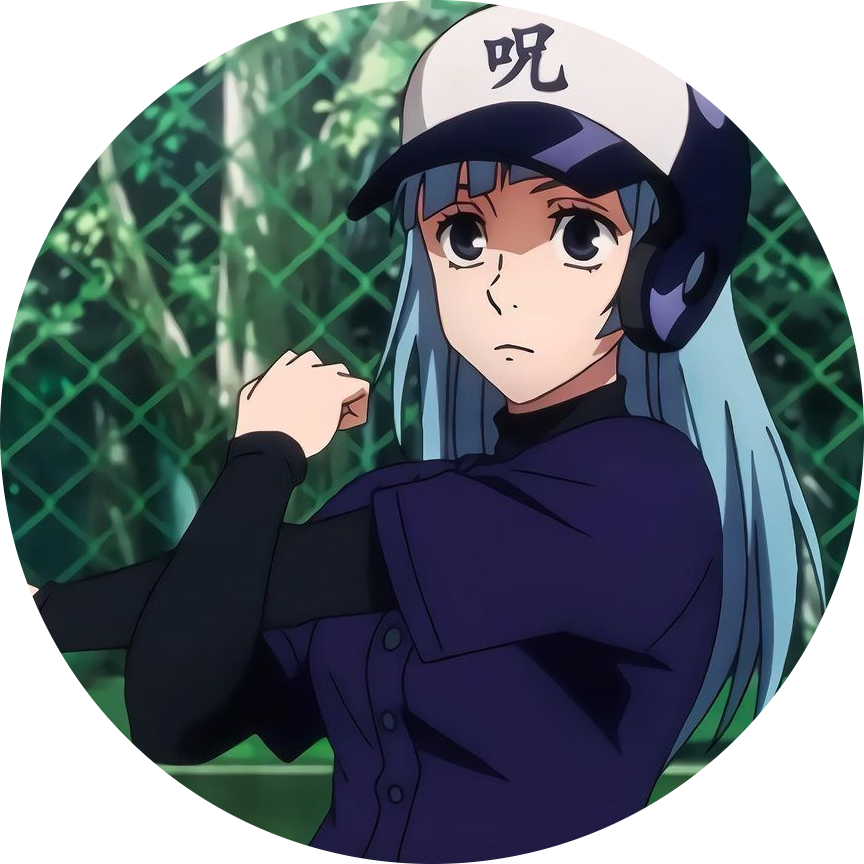 |
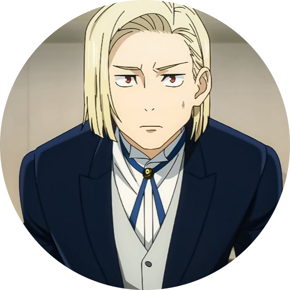 |
Grade 3 is an average rank for jujutsu sorcerers to have, especially students.
Ryomen Sukuna |
Kenjaku |
Mahito |
Toji Fushiguro |
|---|---|---|---|
| 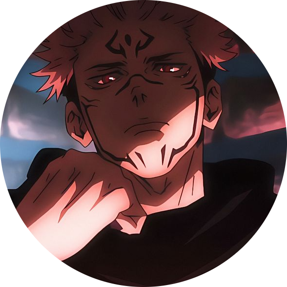 |
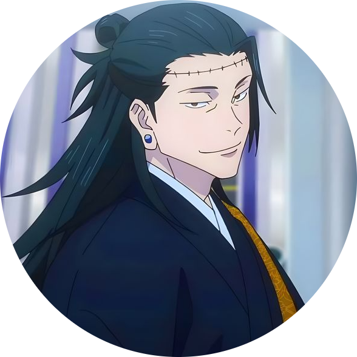 |
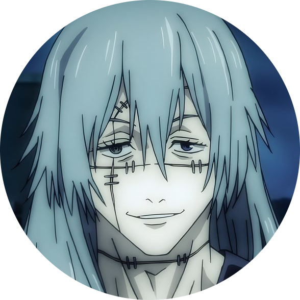 |
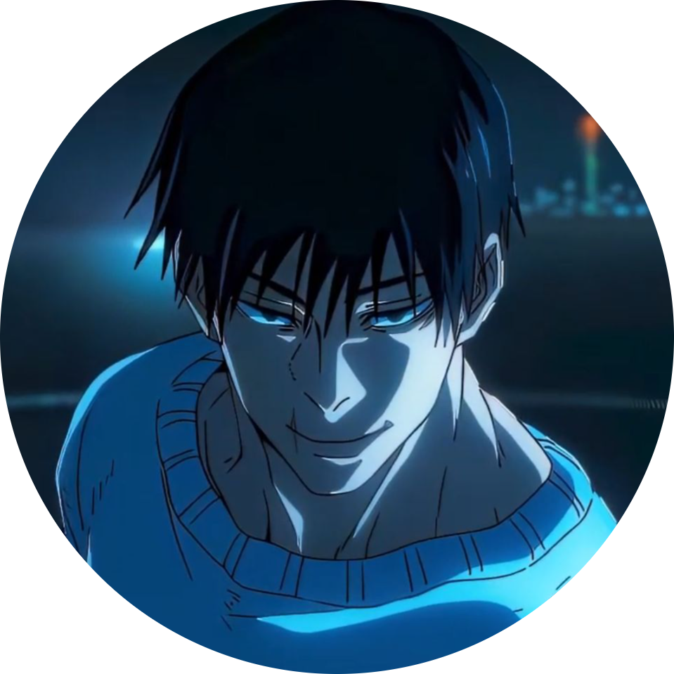 |
The primary antagonists in Jujutsu Kaisen are characterized by their extreme power, ancient origins, and philosophies that directly challenge the value of human life.